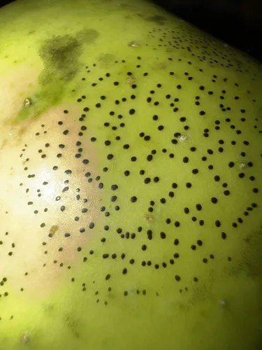

苹果表面有成簇的针尖状黑点
苹果原本平滑的果皮上，有时会出现像撒了胡椒一样的黑点。先看它们的排列及下面的果皮，再判断是否存在虫害。

放大一小组黑点
用侧光和放大镜观察。蝇粪病表现为许多边界可辨的细小黑点聚集在表面。若是一片边缘模糊的灰黑或橄榄色污斑，要考虑可与之同果发生的煤污斑。
看果皮下面
选一个带斑果，从黑点处向下切。果皮完整、下面果肉坚实且颜色正常，符合表浅斑污。若有带碎屑的孔、深坑或软褐果肉，则应另外判断。
对照树冠内外
比较内膛遮阴枝和外侧枝。枝叶密集、果面长时间潮湿，有利于这些表面真菌。常规修剪时可给结果部位留出透光、通风空间。
采果前后复查
擦拭前先留几个有代表性的苹果，拍下黑点由少到多的样子。若历年斑果比例变化，除记录品种和着生位置，还应记下采收前的潮湿天气。